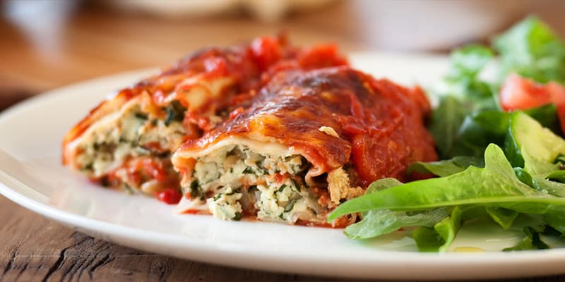

Spinach and Ricotta Canneloni

Description
This is a quick and easy canneloni recipe featuring spinach and ricotta!
Ingredients
- 2 x 400g tin crushed tomatoes
- 1/4 teaspoon dried oregano
- 1 tablespoon sugar
- 1 taplespoon salt, and a pinch of ground black pepper
- 1 teaspoon olive oil
- 1 garlic clove, crushed
- 1 brown onion, finely chopped
- 500g ricotta
- 100g spinach, finely chopped
- 1/3 cup pine nuts, toasted
- 1/4 cup grated parmesan
- 4 fresh lasagne sheets
- 2 cups grated mozzarella
- 1/3 cup grated parmesan, extra
- 1/4 cup basil leaves, for serving
Steps
- Preheat oven to 180 degrees Celsius
- In a medium saucepan, place tomatoes, oregano, sugar and ¼ teaspoon salt and pepper. Simmer for 10 minutes or until thickened. The tomatoes can be used as they are, or for a smoother result puree with a stick mixer. Pour half the mixture into the base of medium baking dish.
- Heat olive oil over medium low heat in a small fry pan. Saute onion and garlic until transparent
- Combine ricotta, spinach, onion garlic, pine nuts, parmesan, remaining salt and pepper in a large bowl.
- Cut each lasagne sheet into thirds. Place ¼ cup of ricotta mixture along length of each sheet and roll up to form a tube. Do not overlap the ends too much.
- Lay the tubes in two rows of six on the tomato sauce in the baking dish, making sure the joined part is at the bottom. Top with extra tomato sauce and cover with mozzarella, then parmesan.
- Bake for 25 minutes or until golden and bubbling.